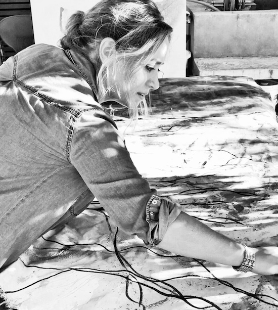

BIO
|
|
|
|
BIO |
|  |
Todo lo sólido se desvanece en el aire Toda forma tiene contenido, explícito o implícito, pero lo tiene. Esa forma expresa siempre dos circunstancias: la subjetividad del artista y su visión del mundo en el que le tocó vivir. Un mundo que no eligió pero que, invariablemente tratará de entender y cambiar. Sobre todo, esto último. El mundo que representa Mariana Rodríguez Avila en sus pinturas está signado por la incertidumbre, la exasperación y la violencia. Pintura abstracta, es cierto, pero al mismo tiempo absolutamente realista. El garabato, el chorreado, la mancha, expresan el caos de este siglo XXI donde se derrumban las viejas certezas pero no surgen otras nuevas que las reemplacen. Es una pintura emocional, gestual, pero al mismo tiempo profundamente reflexiva. El hecho de poder fijar el caos en una tela coloca a la artista en una posición de fuerza. Al representarlo, lo domina, lo fija, lo ordena. En sus obras hay, sin lugar a dudas, un orden secreto. Cada escuela pictórica, cada pintor en particular, aporta una nueva mirada. Puede coincidir o no, con otros artistas, pero siempre será única. Asomarse al mundo de Mariana Rodríguez Avila es contemplar nuestro tiempo al desnudo. Podemos aceptar, resignados, que las cosas son así y no pueden ser cambiadas. O por el contrario, podemos convertir al caos en materia creativa. Esta opción es la que eligió, con pasión y lucidez, la artista. Por Luis Pazos |
|||